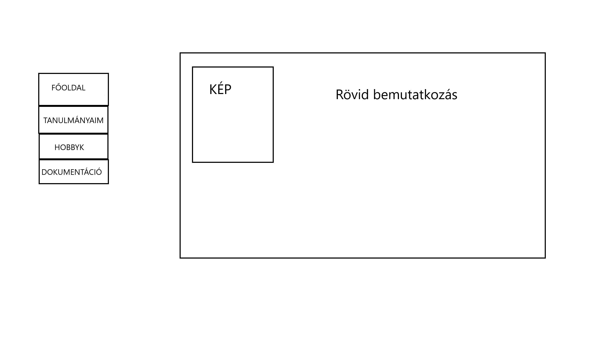
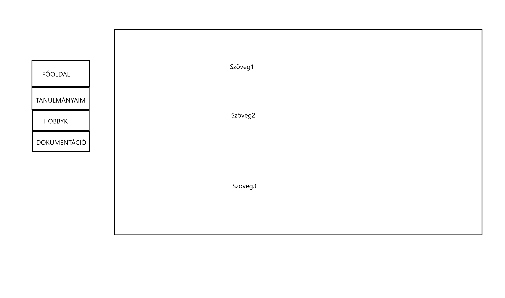
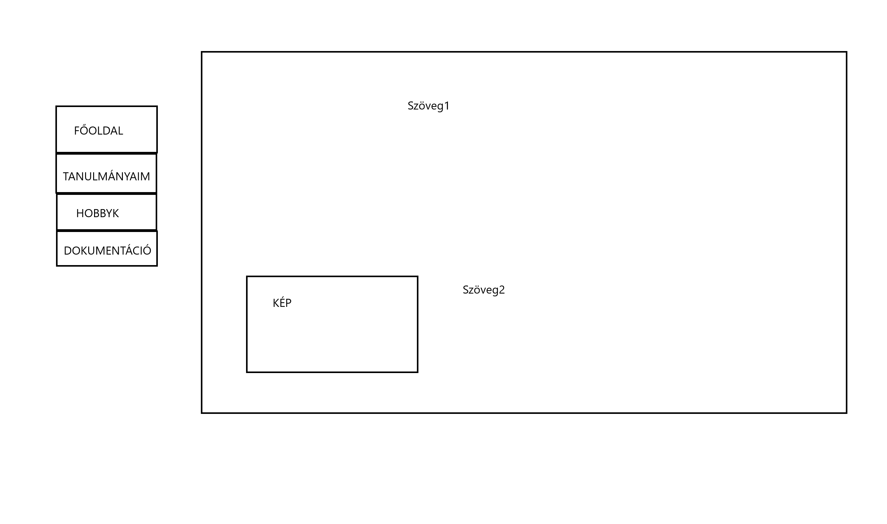

Dokumentáció
Az első nehézségekkel rögtön a tervezéskor kellett szembesülnöm.
Továbbá a html és css nyelvvel sem boldogultam olyan gyorsan, és könnyen,
mint azt előre gondoltam.
Itt látható a főoldal eredeti terve:

A képet és a szöveget végül felcsereléltem, jobban tetszett úgy.
A legnagyobb nehézséget ez az oldal jelentette,
ezen belül is a "responsivity"
, illetve a menüoszlop.
Itt látható a tanulmányaim című oldal eredeti terve:

Itt látható a hobbyk című oldal eredeti terve:

Egyéb változások:
A menüoszlopot végül feljebbre raktam,
valamint teljesen az oldal bal oldalára igazítottam.
A hobbyk oldalon úgy döntöttem, hogy a két sportot egy darab
egybefüggő szövegben írom meg.
Felhasznált weboldalak: